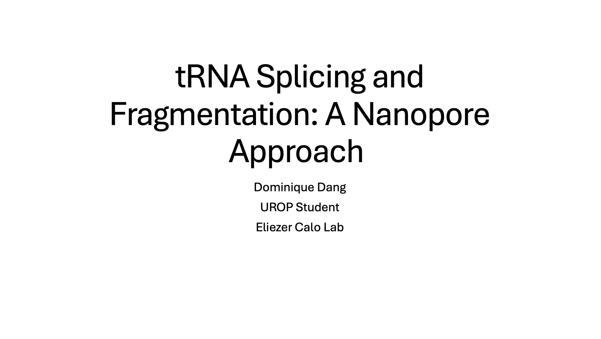
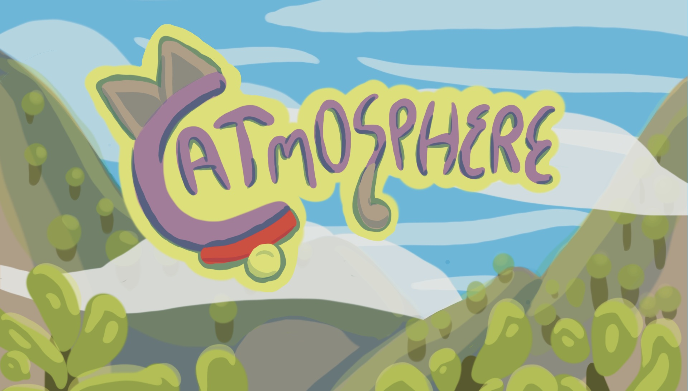

𓆝 𓆟 𓆞
Hi, I'm Dom!
I study Computer Science
& Biology at MIT.
Trying to build things, wrangle data, and occasionally do both at once.
Check out what I've been
working on below.
research & projects

research
Oncology Data Science Internship — Novartis
May – Aug 2025

research
tRNA Analysis via Nanopore Sequencing — Eliezer Calo Lab
Jan – Aug 2025

teaching
Global Teaching Labs Wales
Jan 2026

research
Bidirectional Promoters — Anders Sejr Hansen Lab
Jan 2024 – Jan 2025

misc
Momentum Design Competition — Blue Origin
Jan 2024 · 1st place

misc
Catmosphere — HackMIT
Sept 2023 · top beginner hack

misc
Project Cinderella
Jun – Aug 2023

research
Tricuspid Valve Mechanics — Rouzbeh Amini Lab
Jun – Aug 2022 · published in JBE
making things
comics
A nonfiction comic about the creator of Wonder Woman for my close reading class.
pottery
Learning to center clay (and making taller vases).
travel
Photos from Wales, where there are more sheep than people.
sewing & making
Spending more time in the makerspaces: currently learning how to sew, work with glass
and fire, and lasercut.